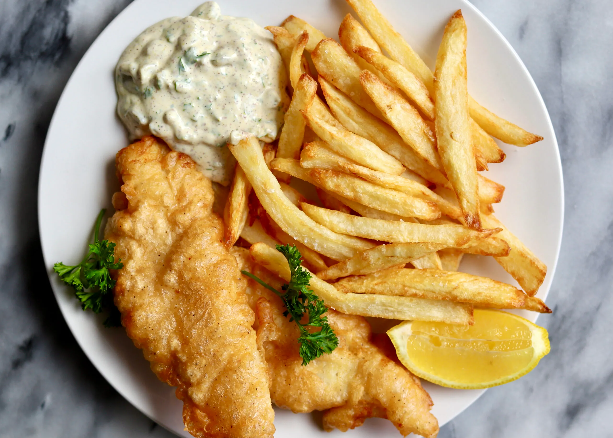

Classic Fish and Chips Recipe
Ingredients:
- 4 white fish fillets (cod, haddock, or pollock)
- 1 cup all-purpose flour
- 1 teaspoon baking powder
- ½ teaspoon salt
- ¼ teaspoon black pepper
- 1 cup cold sparkling water
- 4 large potatoes, peeled and cut into fries
- Vegetable oil (for frying)
- 1 teaspoon vinegar (optional, for serving)
- Salt (for seasoning)
Instructions:
- Heat oil in a deep fryer or large pot to 350°F (175°C).
- Mix flour, baking powder, salt, and pepper in a bowl.
- Gradually whisk in sparkling water until smooth.
- Dip fish fillets into batter, coating evenly.
- Fry fish for 4-5 minutes until golden brown and crispy.
- Remove and drain on paper towels.
- Fry potato fries until golden and crispy, then season with salt.
- Serve hot with vinegar or tartar sauce.